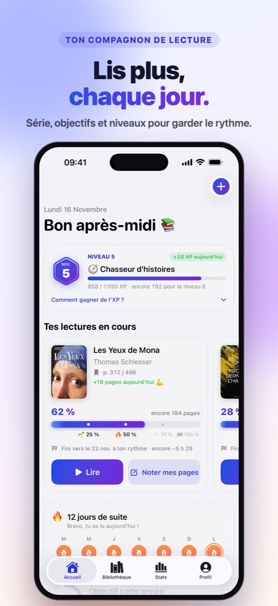
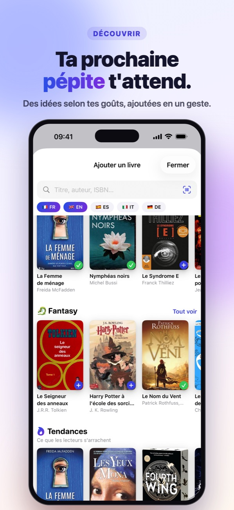
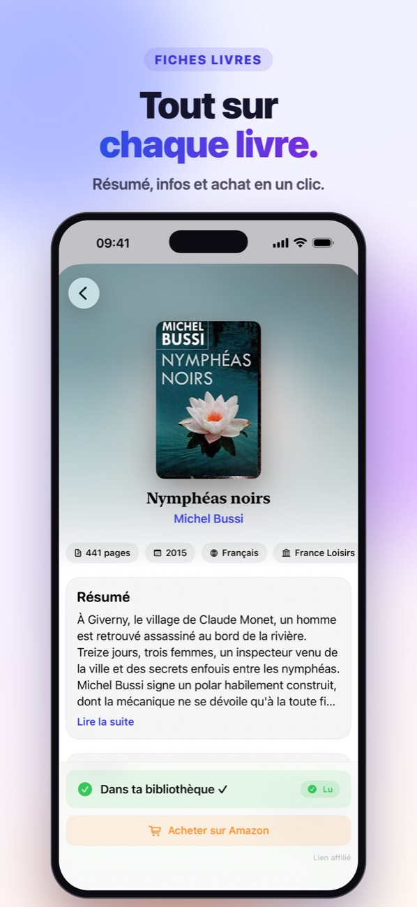
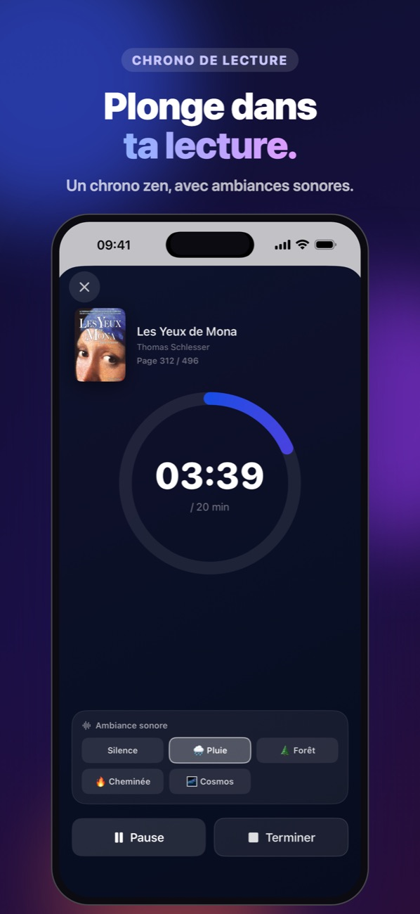
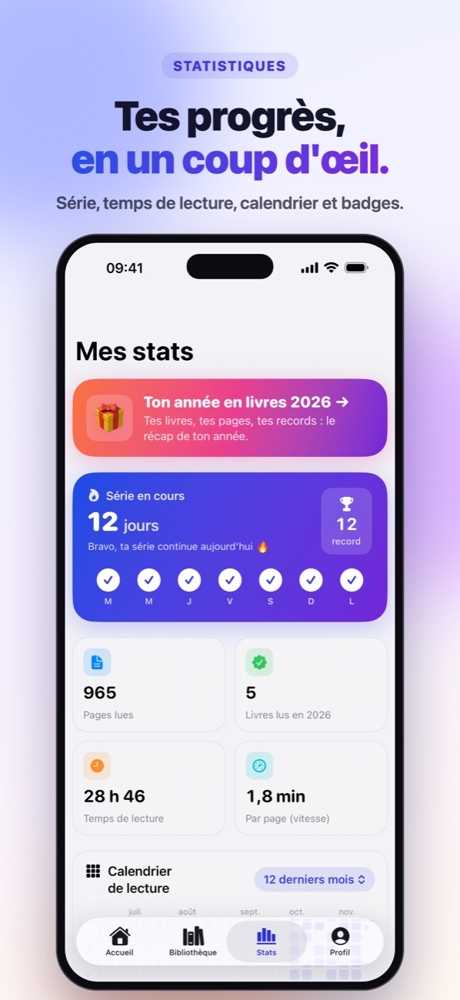
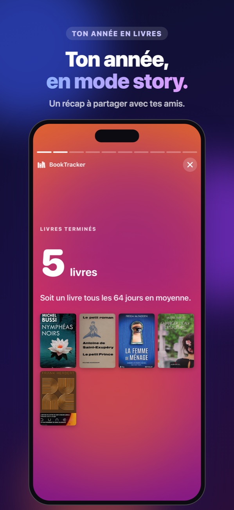

Scanne, cherche ou importe
Scanne le code-barres ISBN, cherche par titre ou auteur, ou importe toute ta bibliothèque Goodreads ou StoryGraph d'un coup.
BookTracker fait de la lecture une habitude qui tient. Ajoute un livre en quelques secondes, chronomètre tes sessions, regarde ta série grandir et revis ton année en livres.

Dans l'app





Fonctionnalités
Scanne le code-barres ISBN, cherche par titre ou auteur, ou importe toute ta bibliothèque Goodreads ou StoryGraph d'un coup.
Un minuteur apaisant avec sons d'ambiance (pluie, forêt, cheminée) qui note tes pages et tes minutes à ta place.
Chaque page rapporte de l'XP. Garde ta série quotidienne et monte de niveau en lisant.
Livres, pages, rythme de lecture et objectif annuel, dans des graphiques clairs.
Un récap façon story de ton année de lecture, prêt à partager avec tes amis.
Widgets sur l'écran d'accueil, rappel quotidien et bibliothèque synchronisée entre iPhone et iPad.
Tarifs
Pas de pub, pas de revente de données, pas de piège. Télécharge BookTracker gratuitement et passe à Premium seulement si tu veux plus.
Téléchargement gratuit, jusqu'à 10 livres dans ta bibliothèque.
Livres illimités, étagères, avis, ambiances sonores et plus. Abonnement mensuel ou achat unique à vie.